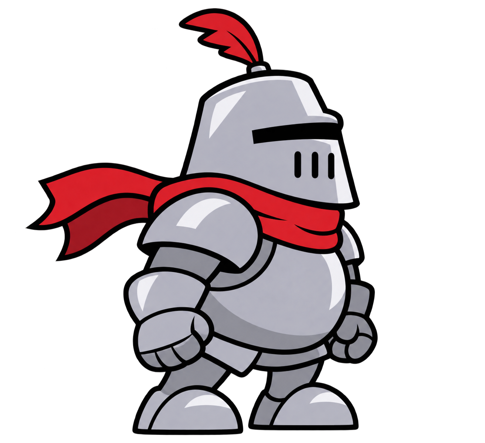

Le dragon n’a qu’àbien se tenir.
LE REGISTRE DES CHEVALIERS
Créer une partie
JOUR 10
RECORD PERSONNEL0 m
← → Incliner l’armureESPACE Sauter au bout de la rampe, puis propulserP PauseProgression sauvegardée automatiquement
LA FORGE & LE LABORATOIRE
L’Échoppe de l’Enclume.
Équipements de vol, alchimie douteuse et acier garanti beaucoup trop lourd.
UN DRAGON. UNE PROMESSE. BEAUCOUP DE BOSSES.
Le serment d’acier intégral.
Ne jamais retirer son armure. Atteindre le dragon. Régler le problème avec le casque.
Le grand parcours · 100 km : Vallée → 6 km : Siégeurs → 12 km : Falaises → 20 km : Mer de nuages → 30 km : Dragon → 45 km : Marches → 60 km : Forteresses → 80 km : Tempêtes → 100 km : Dragon ancestral. Chaque passage exige de traverser un rempart de 300 à 636 m d’épaisseur. Les pierres brisées restent détruites entre les essais. Un relais tous les 5 km donne une prime au premier passage.
« Retirer ne serait-ce qu’un gantelet serait un déshonneur mortel. »
— Godefroy, peu avant de tester la planche savonnée.
LE GRAND SORCIER EST VAINCU
VICTOIRE !
— FIN —
Merci d’avoir joué !
Merci, chevalier !
CADEAUTon premier booster !Maintiens ESPACE pour t’envoler
« Viens me voir dans la forge, j’y serai ! »
MODE TESTRAMPEHauteur +0 · Fin +0Or illimité · sans modifier votre partie · réglages appliqués au nouvel essai